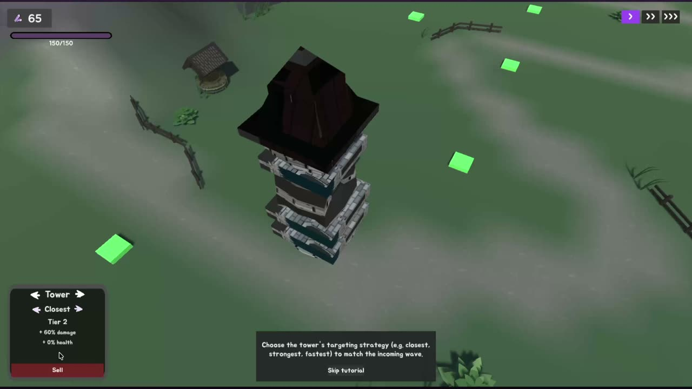
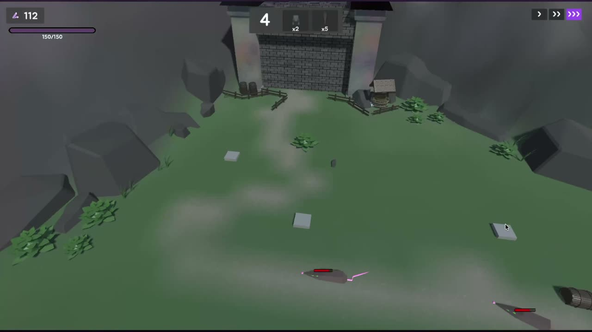
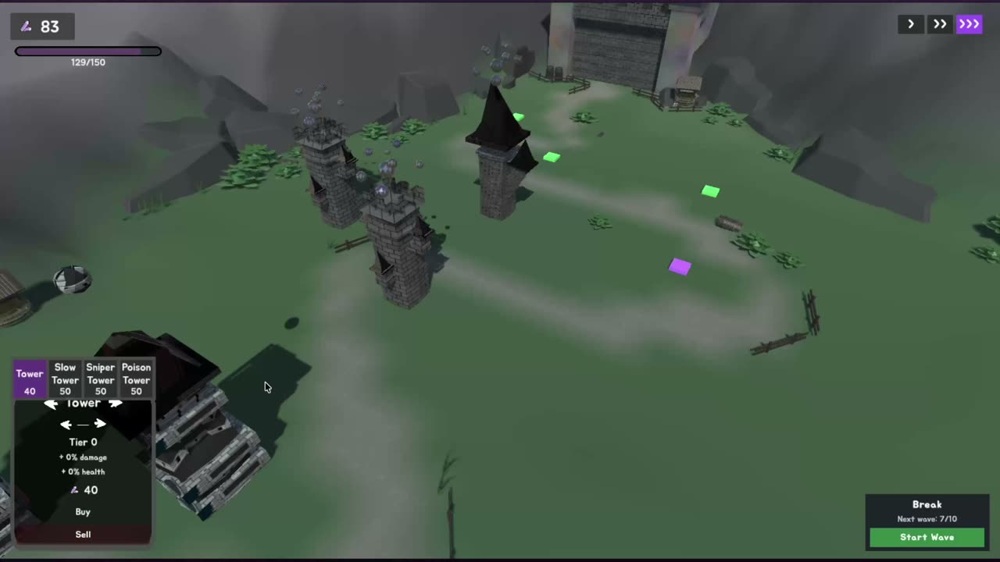
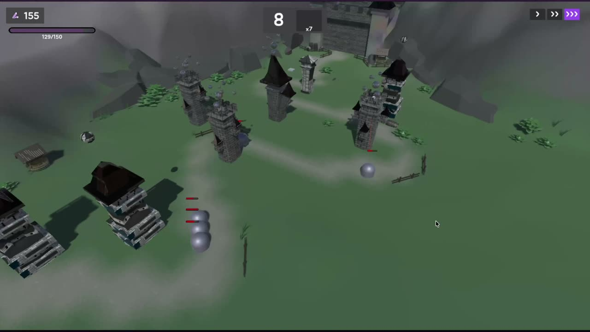

Factory · Prototype · Pool
Tower and enemy factories, prototypes for variants, an object pool so a wave of fifty rats does not allocate fifty times.
Rats, waves, towers — and a game that is well structured on purpose, and ugly on purpose too. The architecture was the product: 106 scripts, 11 named design patterns, every class with one job, undo and redo for free. The looks got whatever time was left, which was none. The map below is generated from the actual code.
Tower and enemy factories, prototypes for variants, an object pool so a wave of fifty rats does not allocate fifty times.
Shared tower and enemy data in flyweight registries; the whole UI split into ten presenters and thirteen views.
Enemy state machines (move, attack, death), targeting strategies (closest, weakest), build / sell / upgrade as undoable commands, and events everywhere instead of polling.
One bootstrapper builds the factories, registries and pool and registers them; managers are singletons with an explicit lifetime — persistent or per scene.
ScriptableObject audio library, a dynamic music controller that switches tracks per game state, and fifteen sound effects we recorded ourselves over two evenings.
Towers, rats, terrain and decorations modelled and animated in-house; Unity 6 behaviour graphs for the rats. First time any of us lit a 3D scene — it shows, and that was fine.
Classic tower defense loop: place towers along the path, upgrade or sell them, hold the base against waves of rats. Enemy variants (tank, fast, diva), tower variants with their own projectiles (poison, slow), an economy of build / sell / upgrade, win and lose states, a tutorial and music that changes with the state of the game. Undo and redo included, because commands made it free.



